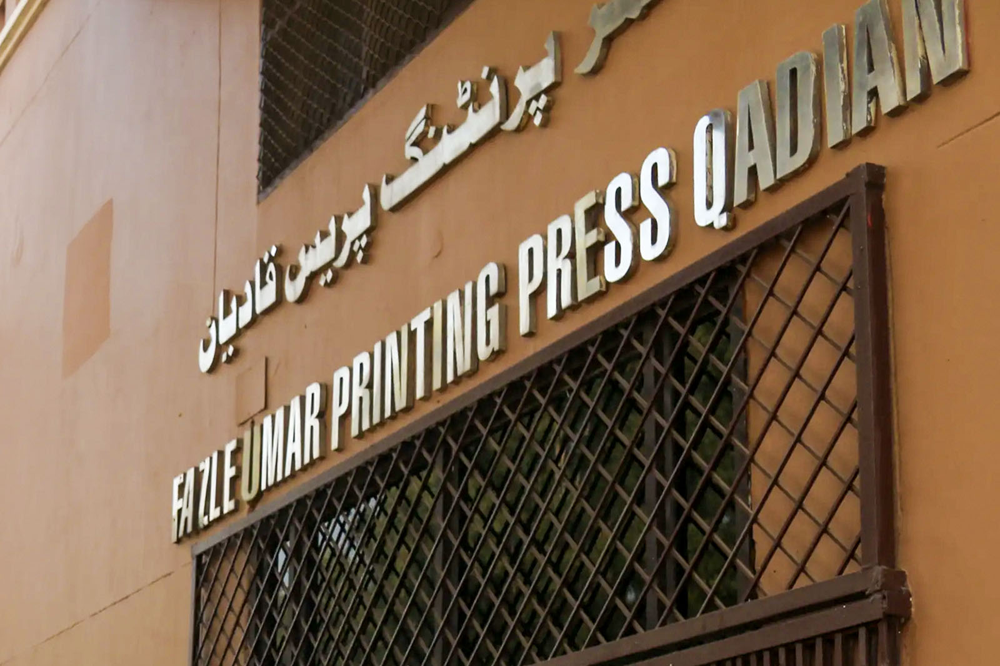

Chapter 16 of 22
A Day of Service and Reflection
Thursday, November 28, 2024 · Part III

The time between Zuhr and Maghrib in Qadian feels brief, often spent in personal prayers, reflection, or exploring the town beyond the Ahmadiyya Muhalla. Today and tomorrow, many of the Adhan calls are being performed by members of our Waqf-e-Nau team. It’s heartwarming to see everyone supporting and encouraging one another during this unique and blessed opportunity.
Shopping in Qadian: A Negotiator’s Playground
Shopping here has its own charm—and challenges. Bargaining is truly an art. Both the shopkeepers and our team know that this ritual is part of the experience. No matter what price is initially quoted, the conversation always begins with, “This is way too much!” The shopkeeper might insist the price is fixed, but eventually, both sides start negotiating. Sometimes, we’d even pretend to walk out, only to return and continue the game.
Once back together, we compared prices, proudly sharing how we managed to get the best deal—or laughing at who might have been out-bargained. This friendly competition carried over from Agra and Delhi to Qadian, though I personally prefer the fixed prices we have back home!
A Visit to Noor Hospital
During our day, there were a few members we didn’t see much, as they had a different itinerary:
- Eisa Tanauli—Pre-medical student from Dallas, Texas
- Hasher Kaleem—Army medic and pre-medical student from South Virginia
- Dr. Sheharyar Sarwar—Psychiatrist from Maryland
- Dr. Mueen Ahmad—Psychiatrist from Queens, New York
- Dr. Mehboob Ahmed Rehan—Infectious diseases specialist from Dallas, Texas
- Dr. Mohammad Ali Mumtaz—Pediatric cardiac surgeon from Jacksonville, Florida
- Dr. Mubashir Ahmed Mumtaz—Adult cardiac surgeon from Harrisburg, Pennsylvania
Later in the evening, I had a chance to speak with Dr. Mubashir Mumtaz Sahib about where they had been. He shared their experience with a warmth and humility that reflected the profound impact it had on him.
“Alhamdulillah,” he began.
By the grace of Allah and with the permission of Hazrat Khalifatul Masih V (aba), a group of us—two pre-medical students and five physicians—had the privilege of visiting Noor Hospital here in Qadian. This wasn’t just a professional visit; it was deeply spiritual, connecting us to the vision of the Promised Messiah (as).
When we arrived, we were welcomed by Dr. Nishan Ahamed Sahib, the hospital’s deputy director, and Dr. Ataul Hafeez Imran Khan, a dental surgeon and the general secretary of the Ahmadiyya Muslim Medical Association in India. They took us on a tour of the facility, and while the surroundings were humble, the purpose and mission of Noor Hospital were palpable.
You know, Noor Hospital was established in 1917 during the era of Hazrat Khalifatul Masih II (ra), and it’s a testament to the Promised Messiah’s (as) devotion to humanity. His couplet sums it up beautifully:
My aim, my desire, and my wish is to serve humanity.
This is my work, my burden, my custom, and my path.
The hospital’s modern 50-bed facility, which was inaugurated by Hazrat Khalifatul Masih V (aba) in 2005, is small but mighty. They have an operating theater, dental wing, homeopathic clinic, and even a busy labor and delivery unit. There’s a pharmacy, X-ray department, and a small lab. Despite limited resources, they treat thousands of patients every month, many of whom receive free or subsidized care.
One of the most inspiring moments was meeting the dedicated staff. Dr. Mehmood Butt and his wife, Dr. Manju Butt, have served in Ghana for 18 years and now continue their work here. Their devotion is incredible. And then there’s Dr. Abdul Hafiz Sahib, who runs a busy ENT practice. These people embody the spirit of service.
Being there, I couldn’t help but think of the Promised Messiah’s (as) prophecy—that people would come to Qadian seeking healing and solace. Noor Hospital is a living testament to that vision. It’s not just a hospital; it’s a beacon of compassion and sacrifice.
Dr. Mubashir paused and smiled.
This visit wasn’t just humbling; it reminded me of why we are Ahmadis—why service to humanity is so central to our faith. May Allah continue to bless Noor Hospital and all those who dedicate themselves to this mission.
His words left a deep impression on me, and I could see how much this experience had meant to him and the group.
A Special Session
After Maghrib and Ishaa prayers, which were combined and offered at Masjid Aqsa, we attended a special session with K. Tariq Sahib, Additional Nazir Islah-o-Irshad Noorul-Islam, Qadian. He delivered a captivating 30-minute talk in English on the sacred sites of Qadian. His engaging presentation kept everyone interested, and the short Q&A session that followed was well-received by the group.
Ending the Day
This had been another long and fulfilling day. Exhausted but content, we returned to Sara-i-Waseem for a quick dinner, preparing ourselves for our final full day in Qadian.